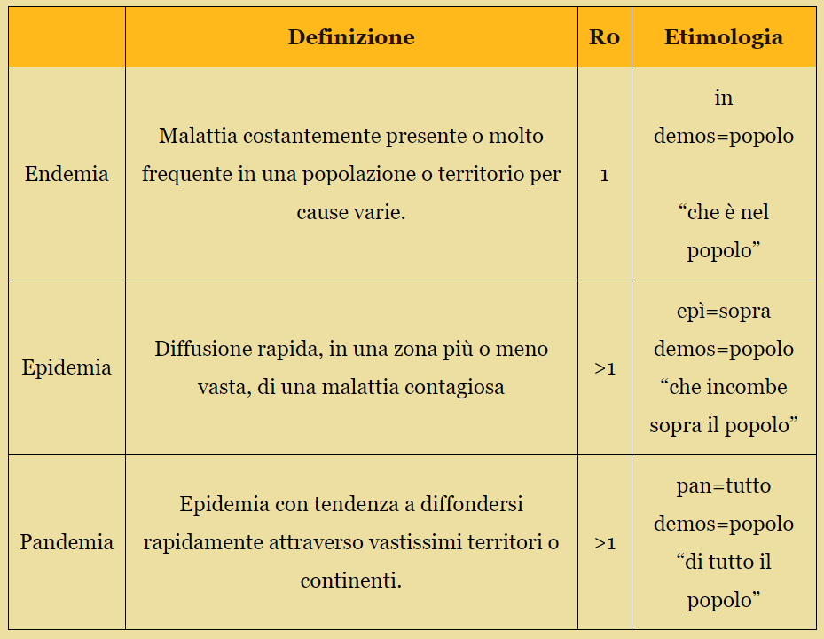

Che cos'è un'epidemia? E perché ci interessa?

Abbiamo spesso sentito il termine “pandemia” usato in riferimento al Covid-19, ma cosa significa effettivamente questo termine?
Una pandemia è definita come una malattia epidemica caratterizzata da una diffusione eccezionalmente rapida e vasta. E’ difficile
generalizzare l’espansione di una pandemia, date le moltissime variabili che cambiano a seconda del contesto sociale, politico e
storico, oltre alle caratteristiche del patogeno stesso. E’ per questo che esiste un’intera disciplina dedicata allo studio della
diffusione delle malattie: l’epidemiologia.
Bisogna quindi specificare che la simulazione e l’articolo che seguiranno tentano di spiegare la diffusione di un’epidemia in linee
molto generali, che non saranno mai in grado di simulare la complessità di un’epidemia reale.
Possiamo partire da una situazione semplice. In una popolazione (rappresentata nel nostro caso da dei pallini statici) comincia a
diffondersi una malattia.
>Anche se la malattia parte da una sola persona, può diffondersi in maniera molto rapida. Nello schema riportato, si può osservare
come ogni persona infetta contagia sempre e solo altre due persone.

In questo caso, il numero medio di persone contagiate da ogni
persona infetta è fissato, ma esso può variare a seconda della popolazione studiata e dalla malattia. Questo indice è detto numero di
riproduzione di base (R0), e risulta molto importante nello studio delle epidemie.
R0 sta alla base della definizione stessa di epidemia. In epidemiologia, per essere classificata come un’epidemia, l’indice R0 della
malattia deve essere maggiore di 1. Se è uguale a 1, si tratta invece di una endemia. Quando si trova in uno stato endemico, la malattia
non si diffonde in maniera esponenziale, ma allo stesso tempo non scompare completamente, rimanendo presente nella popolazione locale.
Per esempio, la varicella è endemica nel Regno Unito.

Riportiamo i valori R0 di alcune epidemie
Esattamente quanto crescono in fretta?
I casi nuovi nascono dai casi attuali, quindi più sono quest’ultimi, più crescono i contagi. Quello che si verrebbe a osservare è una crescita di tipo esponenziale.
Manca comunque un dato: le epidemie non possono crescere all’infinito: prima o poi, tutta la popolazione sarà contagiata, e non ci
saranno più nuovi casi. Sembrerebbe quindi che i contagi crescano in continuazione per poi cadere improvvisamente a 0 quando tutta la
popolazione è ormai contagiata, una crescita molto insolita. Non è infatti questo il caso.
Non bisogna aspettare fino alla fine di un’epidemia un cambiamento nella curva del contagio.
Man mano che più gente viene contagiata sarà impossibile per un contagiato trovare lo stesso numero di persone sane che
incontrerebbe in una popolazione completamente suscettibile. La curva che viene a formarsi non è quindi una curva esponenziale ma una
curva logistica.
Qui sotto è presente la prima di una serie di simulazioni interattive. Gli slider possono essere usati
per variare le caratterestiche dell'epidemia mentre il grafico per vedere l'andamento del contagio nel tempo.
Da adesso in poi le persone suscettibili saranno identificate con il colore verde, mentre quelle infette con il colore rosso.
Variando la probabilità che le persone vicine a un infetto vengano contagiate, osserva il grafico logistico che viene a formarsi.
I contagi crescono rapidamente per un periodo di tempo, per poi raggiungere un flesso, e da lì in poi i casi crescono, ma sempre più lentamente.
Possiamo quindi ridefinire il nostro numero di riproduzione di base (R0): il numero medio di persone contagiate da una persona infetta in una popolazione completamente suscettibile.
Si può inoltre definire un secondo numero: il numero di riproduzione effettivo (R), che indica l’effettivo numero medio di persone sane contagiate da ogni infetto e che varia nel corso di una epidemia.